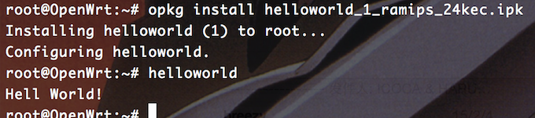

Samba and Cross-Compile Toolchain on WRTnode
Embedded System Lab 2 on WRTnode
1. 器材列表
- WRTnode核心板，专用USB线，USB-to-TTL串口线
2. 接线方法
- 电插座\<->手机充电头\<->专用USB线的单个USB头\<->专用USB的OTG头\<->WRTnode核心板\<->GND、RXD2、TXD2三个针脚\<->USB-to-TTL线的杜邦线头\<-> USB-to-TTL线的USB头\<->电脑USB口；
- 针脚具体接线方法同第一次实验报告，可在WRTnode Wiki找到，细节不再作冗余说明；
- 实验的大部分流程都是通过
$ ssh root@192.168.8.1在Mac OS X的终端中以root身份完成的，WRTnode的作用相当于局域网路由器，通过它使得Macbook、手机等终端可以连接Internet。
3. Samba配置
-
Samba Server Port的安装：
需要在VPN或者代理环境（Shadowsocks透明路由，或者Macbook上的全局和精确模式的PAC分流VPN均可，因为似乎wrtnode的官方源访问不稳定）下，在WRTnode的模拟终端下$ opkg update，然后$ opkg install samba36-server；Samba版本号日后可能有变化。
-
Samba Server Port的配置：
1. 配置全局共享参数
将/etc/samba/smb.conf.template中原有的限制行invalid users = root注释掉（如果希望以root从本机登录而没有在OpenWRT上安装添加其它用户的模块），其它保持默认即可；
2. 配置共享目录和参数
例如要以root身份访问并读写开发板上/root文件夹，便可以创建一个名为home的共享，即在/etc/config/samba中修改sambashare部分如下：
config sambashare
option 'name' 'home' //共享名称
option 'path' '/root' //共享文件夹位置
option 'read_only' 'no' //远程可以有读写权限
option 'guest_ok' 'yes' //可以以客人身份
option 'create_mask' '0750' //登录者创建的文件的权限掩码（默认权限）
option 'dir_mask' '0750' //文件夹的默认权限
#option 'users' 'abc'
当然也可以按照同样格式再配置多个不同的共享目录，共享给本机上的不同（或者相同）用户。
3. 配置共享登录的密码
直接运行smbpasswd命令会遇到问题，显示如下错误信息：
Failed to open /etc/samba/smbpasswd
因此需要先在该位置建立一个空文件，然后再运行$ smbpasswd -a root命令，赋予root被远程共享登录的权限并随之设置其密码。密码会以加密文本方式保存在上述文件中，root用户有权限查看乃至修改（但是不建议）。
4. 完成
$/etc/init.d/samba start启动服务即可；其它参数包括重启服务、设置为开机自启动等。
-
本机远程登录共享文件夹
完成上述配置后，如果是Windows需要在本地安装Samba客户端，而Mac OS X作为*nix操作系统，对于基于NFS的smb协议有较好的支持，可以直接登录，步骤如下：
打开Finder，cmd+shift+G唤出“Goto”，再按cmd+k，出现如下窗口：
下一步，输入设置的用户名（root）和密码后，成功连接，再选择要加载的宗卷（root），就会打开相应的窗口。至此，已经通过smb协议将WRTnode上的文件路径映射为Mac的一个网络位置，并挂载到了/Volumes/下，如图：
双向的传输和读写都是允许的，并且几乎是立即就能同步完成。
4. 其它文件传输方式
-
WiFi：sftp
-
WiFi：scp
-
TTL串口：xmodem
5. 文件传输和共享方法的比较
6. 交叉编译环境搭建
-
第一步：从源码编译固件
因为Mac OS X的默认文件系统不区分大小写，而OpenWRT等Linux区分大小写，若在本机上编译会需要分出一块磁盘区域供交叉编译使用，因此选择在阿里云ECS的Ubuntu 14.04 LTS环境下进行编译。
根据官方指南——「WRTnode静态SDK编译」——的说明，并稍作修改，依次执行了以下步骤：
配置Linux编译环境的Dependencies：
$ sudo apt-get install build-essential subversion libncurses5-dev zlib1g-dev gawk gcc-multilib flex git-core gettext建工作目录：
$ mkdir OpenWrt $ cd OpenWrt
下载WRTnode SDK，并将其放到OpenWrt目录下：
$ wget http://d.wrtnode.com/sdk/sdk.tar.bz2解压WRTnode SDK：
$ tar -jxvf sdk.tar.bz2 $ cd wrtnode-sdk
进入编译选择界面：
$ make menuconfig当前已经是WRTnode的默认配置，特别注意，需要按”y”勾选上「SDK」「Toolchain」这两项，配置好以后保存并退出即可。
note：请勿更新feeds和进行svn update升级，已经做好更改。
下面就开始编译了： $ make V=s
经过一段漫长的编译之后生成的固件在
./bin/ramips/openwrt-ramips-mt7620n-wrtnode-squashfs-sysupgrade.bin。 -
应用Cross Compile工具链
解压上述固件同文件夹
ramips/里的SDK压缩包：$ tar -jxvf OpenWrt-SDK-ramips-for-linux-x86_64-gcc-4.8-linaro_uClibc-0.9.33.2.tar.bz2**然后进入解压出来的SDK文件夹，会发现其中文件结构与整个wrtnode-sdks源码包非常接近；需要编译的工程文件放置在
packages/下，这里为了试验创建了一个helloworld，但是print到stdout的内容是“Hell World!”……具体结构如下：OpenWrt-SDK-ramips-for-linux-x86_64-gcc-4.8-linaro_uClibc-0.9.33.2 ➤ ls bin Config-build.in dl feeds.conf.default LICENSE package rules.mk staging_dir tmp build_dir Config.in docs include Makefile README.SDK scripts target OpenWrt-SDK-ramips-for-linux-x86_64-gcc-4.8-linaro_uClibc-0.9.33.2 ➤ tree package package ├── helloworld │ ├── Makefile │ └── src │ ├── helloworld.c │ └── Makefile └── Makefile 2 directories, 4 files
其中最顶层的Makefile是SDK自带的，不必去修改；工程文件夹helloworld内部、与src文件夹同层级的Makefile是面向OpenWRT的Makefile，其具体语法规则的模板见OpenWRT官网的说明，这里附上一个该测试工程对应的可用版本：
工程的源码都放在src文件夹中，最内层的Makefile就是一般工程对应的Makefile了，可以简单写成这样：
# build helloworld executable when user executes “make” helloworld: helloworld.o $(CC) $(LDFLAGS) helloworld.o -o helloworld helloworld.o: helloworld.c $(CC) $(CFLAGS) -c helloworld.c # remove object files and executable when user executes “make clean” clean: rm *.o helloworld
可以在src目录下先make一下，看看Makefile和工程源码是否有严重错误，先修正。
回到SDK的顶层目录上执行
$ make，就会编译packages/中的所有工程；其中这里编译完成的OpenWRT适用安装包在bin/ramips/packages/base helloworld_1_ramips_24kec_.ipk；而($sdk_dir)/build_dir/是编译过程的中间文件存放位置，在
build_dir/target-mipsel_24kec+dsp_uClibc-0.9.33.2/helloworld/ipkg-ramips_24kec/helloworld/bin/中可以找到可执行文件helloworld与Makefile中指示链接进来的DEPENDS库libc.so.6。
在编译时遇到提示库缺失的问题，如：
Package helloworld is missing dependencies for the following libraries: libc.so.6
主要解决思路参照这篇博客，但是要作一些修改，主要是舍去第一步，因为和第三步重复了；以及体系结构i386-linux-gnu可能不适用，现在应该经常看到的会是x86_64了，但原理完全适用：
这个是在我在Openwrt的SDK下编译模块的时候碰到的问题。
缺少类库，然后其实我发现我的类库在系统里是存在的：
locate libc.so.6
结果：
/lib/i386-linux-gnu/libc.so.6 /lib64/libc.so.6
看~明显存在，我用的应该是上面的那个类库，然后我弄了一晚上没弄好，今天所有工作做完终于弄好了。我做的工作包括这些：
第一步
（舍去)
第二步
在你写的代码文件夹下(我写的是个helloworld)下的Makefile里
增加：
DEPENDS:=+libc就是在
define Package/helloworld SECTION:=utils CATEGORY:=Utilities TITLE:=Helloworld -- prints a snarky message DEPENDS:=+libc endef
这个define下面。
第三步
也是在Makefile里增加：
define Package/helloworld/install $(INSTALL_DIR) $(1)/bin $(CP) /lib/i386-linux-gnu/libc.so.6 $(1)/bin $(INSTALL_BIN) $(PKG_BUILD_DIR)/helloworld $(1)/bin/ endef
这里多了一行$(CP)的代码。
最后一步
在
/home/user/attitude/staging_dir/target-mips_r2_uClibc-0.9.33.2/pkginfo下的libc.provides文件里增加两行：/lib/i386-linux-gnu/libc.so.6 libc.so.6
这样就搞定了自动链接在本机系统里已经存在、但是SDK没有找到的库。更多资料可以查阅OpenWRT论坛和StackOverflow的两个相关问题页面，类似问题还是挺常见的。
接下来验证编译、链接出来的可执行文件的指令集格式：
执行
$ file helloworld查看，获得如下信息：helloworld: ELF 32-bit LSB executable, MIPS, MIPS32 rel2 version 1, dynamically linked (uses shared libs), corrupted section header size
说明是MIPS指令集的可执行文件，尝试执行，提示格式不正确：
zsh: exec format error: ./helloworld
将ipk文件通过
scp传到WRTnode上，用opkg安装后就可以跑了：
这里附上一个helloworld工程文件的完整包供参考，是SDK下面的package包，已经测试编译过，因此可以
$ make clean一下再尝试。
7. 嵌入式板卡本机开发环境
虽然内存64M将将够，但是16MB的闪存实在是吃紧，因而通用的编译套件无论是巨无霸gcc还是clang都无法在WRTnode上运行，必须依赖交叉编译环境才可以。
固件自带了Python 2.7，直接用ssh或者串口登录，在板卡上用vi写程序、用python解释执行一些不耗很多资源的程序似乎都是没有问题的。
以上搭建的交叉编译环境是C语言的，测试发现不支持C++，Java更加不用说了。